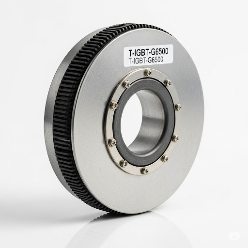

SKU: T-IGBT-G6500
CRRC Times Electric T-IGBT-G6500
An ultra-high-voltage 6500V / 750A press-pack IGBT module designed for the highest reliability in smart grid and power transmission applications.
Product Description
The T-IGBT-G6500 is a cornerstone component for modernizing the power grid. Its 6.5kV rating makes it ideal for building modular multi-level converters (MMCs) used in flexible AC transmission systems (FACTS) and high-voltage direct current (HVDC) transmission lines. The press-pack design ensures excellent thermal management and allows for series connection to achieve even higher blocking voltages. This module is built for decades of reliable service in critical infrastructure.
Primary Applications:
- VSC-HVDC Transmission
- STATCOM and SVC Systems
- Medium Voltage Drives (MVD)
- Large-Scale Grid-Tied Inverters